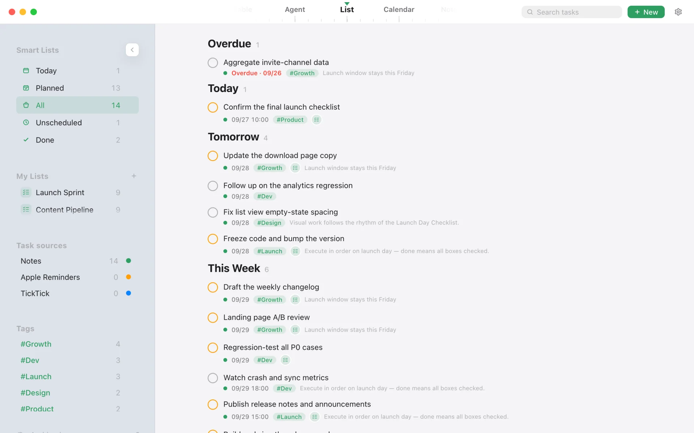
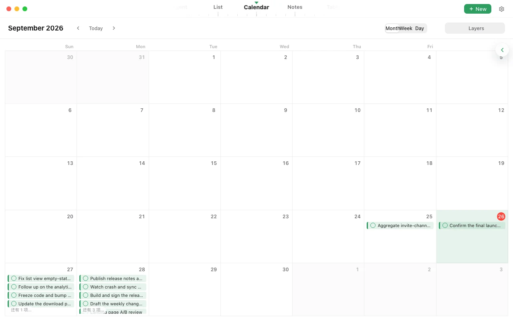
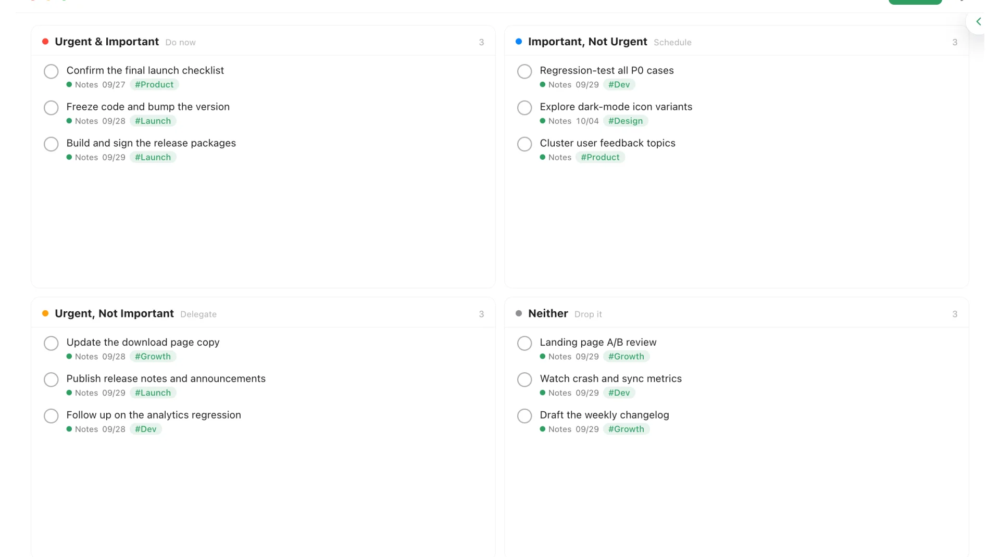
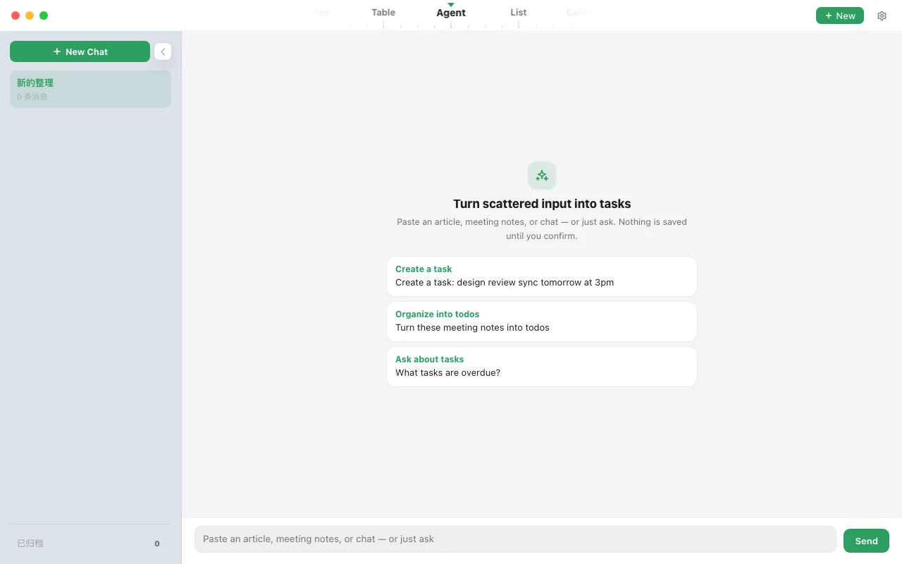

Backlinks
Tasks and notes link both ways. Open a task and you're back in its context.
Notes × to-do lists · macOS
Type - [ ] in a note and it becomes a task in your list. Check it off in the list, and it’s checked in the note too.
Core features
No more copying tasks from your notes into another app. Write your notes in Taskstick and every scattered task line gathers into one list you can act on.
Task lines in your notes become real tasks. Check one off in the list and it’s checked in the note too — both sides always agree.
- [ ] or press ⌘⇧7 to start a task line
Meeting notes, chat logs, article snippets — paste them in. AI picks out the tasks, due dates and tags, and nothing is saved until you confirm.
03 · Views
Sort by date, lay out on a calendar, or split by urgency and importance. Switch between list, calendar and quadrant views — every task still comes from the same notes.
The real app
A native macOS experience: smart lists, custom lists, tags and task sources all in the sidebar, so you see what matters today at a glance.



More capabilities
Tasks and notes link both ways. Open a task and you're back in its context.
Filter by tag, due date and source note, then save the result as lists like “Today” or “Work”.
A global shortcut opens a capture window. Jot it down and it lands in your list.
Create, find and reschedule tasks by voice: “Remind me to send the draft tomorrow at 3pm.” Paid
Three-way merge resolves conflicts automatically. Works offline, catches up when you're back online. Paid
Export notes and tasks to Markdown anytime. Coming from Obsidian or flomo? Bring your notes over in one import.
Local data is free, and always yours.
We charge for flow and intelligence — never for getting your own data back.
Tasks are written right in your notes — no copying them into another app. Check one off in the list and the note follows.
Capturing, managing, filtering — everything that happens on your device costs nothing.
Use every local feature without signing up or signing in. Accounts exist only for sync.
In a local database on your own Mac. Without sync, nothing leaves your device — and you can export everything to Markdown from Settings anytime.
Yes. In Settings, pick your Obsidian vault folder or a flomo export; notes, - [ ] tasks, #tags and [[links]] all come along. Import is a one-time copy — your original files stay untouched.
Your data is stored locally on your Mac, and deleting the app doesn’t erase it. If you’re leaving, export to Markdown from Settings first — tasks are kept as - [ ] / - [x] and open in any editor.
Local features are free forever, including notes, task extraction and write-back, smart lists and all views. Multi-device sync and voice commands will be paid add-ons; pricing will be announced at launch.
No. Every local feature works without signing up or signing in. An account is only used when you turn on sync.
macOS 13 or later, on both Apple silicon and Intel Macs. A Windows version is in preparation.
Download for free, type your first - [ ], and watch it land in your list.